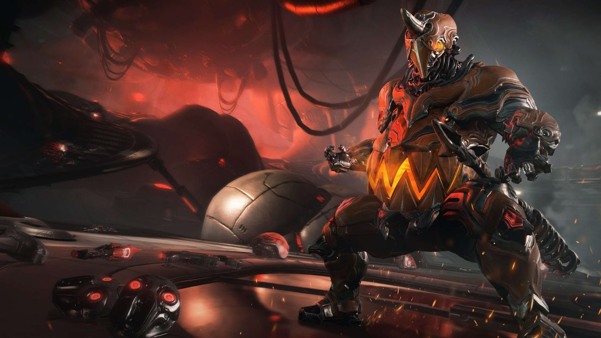
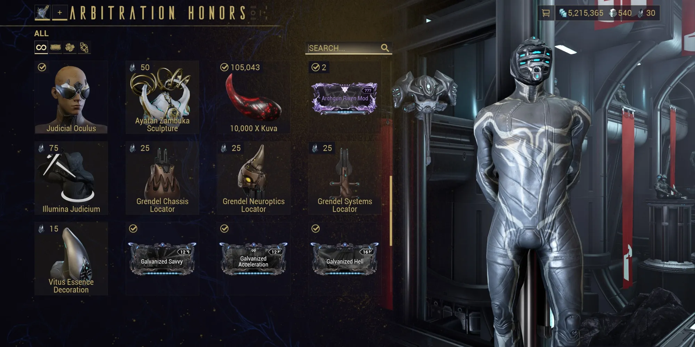

Grendel is the 42nd Warframe, added to the game with Update 26.0 on Halloween 2019. Named after the famous monster from Beowulf, Grendel is the epitomy of Gluttony and power. With impressive stats and a wide range of abilities, this page aims to showcase why in my personal opinion, Grendel is the best thing to be added to Warframe
While i do believe Grendel is the best Warframe added to the game, the way you must unlock him is rather tedius, especially to new players. The first thing you must do to unlock Grendel is complete the star chart and unlock all levels in the game. Next, you must buy his Blueprint Locators from the Arbitration Honors Trader, this will unlock 3 new missions on Europa for you to complete and get his Warframe parts. Alternatively, you can always pay real money and buy him with platinum.
© 2024 Grendel King of Monsters